Display Solutions
Winstar VATN character LCD modules from 8x2 to 20x4. COB modules come with a choice of five LED backlight colours, and two compact 16x2 COG modules offer I2C with a white backlight. VATN gives a deep black background, contrast up to 120:1 and wide viewing angles. Filter by format, backlight or interface to narrow down the list, then get in touch for samples, pricing or a customised version.
| Model No. | Picture | Format | Sizeinch | Backlight | Outlinemm | Viewing Areamm | Active Areamm | Character Sizemm | Dot Sizemm | Duty | Interface | IC |
|---|---|---|---|---|---|---|---|---|---|---|---|---|
| WH0802A1-RLL | 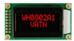 |
8x2 | 1.18" | Red | 58 × 32 | 38 × 16 | 27.81 × 11.5 | 2.96 × 5.56 | 0.56 × 0.66 | 1/16 | 6800SPII2C | RW1063 |
| WH0802A1-GLL | 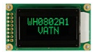 |
8x2 | 1.18" | Green | 58 × 32 | 38 × 16 | 27.81 × 11.5 | 2.96 × 5.56 | 0.56 × 0.66 | 1/16 | 6800SPII2C | RW1063 |
| WH0802A1-PLL | 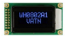 |
8x2 | 1.18" | Blue | 58 × 32 | 38 × 16 | 27.81 × 11.5 | 2.96 × 5.56 | 0.56 × 0.66 | 1/16 | 6800SPII2C | RW1063 |
| WH0802A1-YLL | 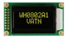 |
8x2 | 1.18" | Yellow-green | 58 × 32 | 38 × 16 | 27.81 × 11.5 | 2.96 × 5.56 | 0.56 × 0.66 | 1/16 | 6800SPII2C | RW1063 |
| WH0802A1-SLL | 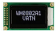 |
8x2 | 1.18" | White | 58 × 32 | 38 × 16 | 27.81 × 11.5 | 2.96 × 5.56 | 0.56 × 0.66 | 1/16 | 6800SPII2C | RW1063 |
| WH1601A-RLL | 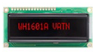 |
16x1 | 2.36" | Red | 80 × 36 | 66 × 16 | 59.62 × 6.56 | 3.07 × 6.56 | 0.55 × 0.75 | 1/16 | 6800SPII2C | RW1063 |
| WH1601A-GLL | 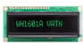 |
16x1 | 2.36" | Green | 80 × 36 | 66 × 16 | 59.62 × 6.56 | 3.07 × 6.56 | 0.55 × 0.75 | 1/16 | 6800SPII2C | RW1063 |
| WH1601A-PLL | 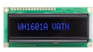 |
16x1 | 2.36" | Blue | 80 × 36 | 66 × 16 | 59.62 × 6.56 | 3.07 × 6.56 | 0.55 × 0.75 | 1/16 | 6800SPII2C | RW1063 |
| WH1601A-YLL | 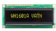 |
16x1 | 2.36" | Yellow-green | 80 × 36 | 66 × 16 | 59.62 × 6.56 | 3.07 × 6.56 | 0.55 × 0.75 | 1/16 | 6800SPII2C | RW1063 |
| WH1601A-SLL | 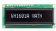 |
16x1 | 2.36" | White | 80 × 36 | 66 × 16 | 59.62 × 6.56 | 3.07 × 6.56 | 0.55 × 0.75 | 1/16 | 6800SPII2C | RW1063 |
| WH1602B-RLL | 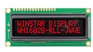 |
16x2 | 2.26" | Red | 80 × 36 | 66 × 16 | 56.2 × 11.5 | 2.95 × 5.55 | 0.55 × 0.65 | 1/16 | 6800SPII2C | RW1063 |
| WH1602B-GLL | 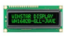 |
16x2 | 2.26" | Green | 80 × 36 | 66 × 16 | 56.2 × 11.5 | 2.95 × 5.55 | 0.55 × 0.65 | 1/16 | 6800SPII2C | RW1063 |
| WH1602B-PLL | 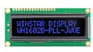 |
16x2 | 2.26" | Blue | 80 × 36 | 66 × 16 | 56.2 × 11.5 | 2.95 × 5.55 | 0.55 × 0.65 | 1/16 | 6800SPII2C | RW1063 |
| WH1602B-YLL | 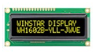 |
16x2 | 2.26" | Yellow-green | 80 × 36 | 66 × 16 | 56.2 × 11.5 | 2.95 × 5.55 | 0.55 × 0.65 | 1/16 | 6800SPII2C | RW1063 |
| WH1602B-SLL | 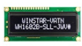 |
16x2 | 2.26" | White | 80 × 36 | 66 × 16 | 56.2 × 11.5 | 2.95 × 5.55 | 0.55 × 0.65 | 1/16 | 6800SPII2C | RW1063 |
| WO1602J-VATNCOG | – | 16x2 | 2.26" | White | 74.2 × 25.2 | 61 × 15.1 | 56.2 × 11.5 | 2.95 × 5.55 | 0.55 × 0.65 | 1/17 | I2C | ST7028-1A |
| WO1602N-VATNCOG | – | 16x2 | 2.26" | White | 68.2 × 25.2 | 61 × 15.1 | 56.2 × 11.5 | 2.95 × 5.55 | 0.55 × 0.65 | 1/17 | I2C | ST7028-1A |
| WH1604A-RLL | 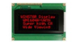 |
16x4 | 2.36" | Red | 87 × 60 | 62 × 26 | 56.2 × 20.8 | 2.95 × 4.75 | 0.55 × 0.65 | 1/16 | 6800SPII2C | RW1063 |
| WH1604A-GLL | 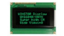 |
16x4 | 2.36" | Green | 87 × 60 | 62 × 26 | 56.2 × 20.8 | 2.95 × 4.75 | 0.55 × 0.65 | 1/16 | 6800SPII2C | RW1063 |
| WH1604A-PLL | 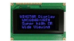 |
16x4 | 2.36" | Blue | 87 × 60 | 62 × 26 | 56.2 × 20.8 | 2.95 × 4.75 | 0.55 × 0.65 | 1/16 | 6800SPII2C | RW1063 |
| WH1604A-YLL | 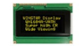 |
16x4 | 2.36" | Yellow-green | 87 × 60 | 62 × 26 | 56.2 × 20.8 | 2.95 × 4.75 | 0.55 × 0.65 | 1/16 | 6800SPII2C | RW1063 |
| WH1604A-SLL | 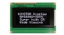 |
16x4 | 2.36" | White | 87 × 60 | 62 × 26 | 56.2 × 20.8 | 2.95 × 4.75 | 0.55 × 0.65 | 1/16 | 6800SPII2C | RW1063 |
| WH2002G-RLL | 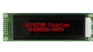 |
20x2 | 2.93" | Red | 115 × 36 | 85 × 18.6 | 73.5 × 11.5 | 3.2 × 5.55 | 0.60 × 0.65 | 1/16 | 6800 | ST7066 |
| WH2002G-GLL | 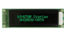 |
20x2 | 2.93" | Green | 115 × 36 | 85 × 18.6 | 73.5 × 11.5 | 3.2 × 5.55 | 0.60 × 0.65 | 1/16 | 6800 | ST7066 |
| WH2002G-PLL | 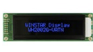 |
20x2 | 2.93" | Blue | 115 × 36 | 85 × 18.6 | 73.5 × 11.5 | 3.2 × 5.55 | 0.60 × 0.65 | 1/16 | 6800 | ST7066 |
| WH2002G-YLL | 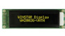 |
20x2 | 2.93" | Yellow-green | 115 × 36 | 85 × 18.6 | 73.5 × 11.5 | 3.2 × 5.55 | 0.60 × 0.65 | 1/16 | 6800 | ST7066 |
| WH2002G-SLL | 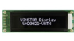 |
20x2 | 2.93" | White | 115 × 36 | 85 × 18.6 | 73.5 × 11.5 | 3.2 × 5.55 | 0.60 × 0.65 | 1/16 | 6800 | ST7066 |
| WH2004A-RLL | 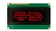 |
20x4 | 2.89" | Red | 98 × 60 | 77 × 25.2 | 70.4 × 20.8 | 2.95 × 4.75 | 0.55 × 0.55 | 1/16 | 6800 | ST7066 |
| WH2004A-GLL | 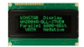 |
20x4 | 2.89" | Green | 98 × 60 | 77 × 25.2 | 70.4 × 20.8 | 2.95 × 4.75 | 0.55 × 0.55 | 1/16 | 6800 | ST7066 |
| WH2004A-PLL | 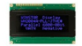 |
20x4 | 2.89" | Blue | 98 × 60 | 77 × 25.2 | 70.4 × 20.8 | 2.95 × 4.75 | 0.55 × 0.55 | 1/16 | 6800 | ST7066 |
| WH2004A-YLL | 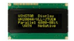 |
20x4 | 2.89" | Yellow-green | 98 × 60 | 77 × 25.2 | 70.4 × 20.8 | 2.95 × 4.75 | 0.55 × 0.55 | 1/16 | 6800 | ST7066 |
| WH2004A-SLL | 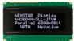 |
20x4 | 2.89" | White | 98 × 60 | 77 × 25.2 | 70.4 × 20.8 | 2.95 × 4.75 | 0.55 × 0.55 | 1/16 | 6800 | ST7066 |
All modules are VATN negative mode displays. COB (Chip on Board) modules have 1/16 duty; the 16x2 COG (Chip on Glass) modules WO1602J and WO1602N have 1/17 duty, I2C only and a white backlight. Specifications are typical values and may change. Please ask for the latest datasheet before designing in. About VATN technology →